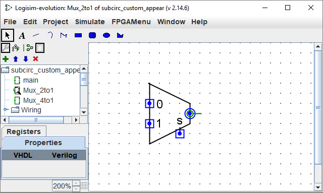
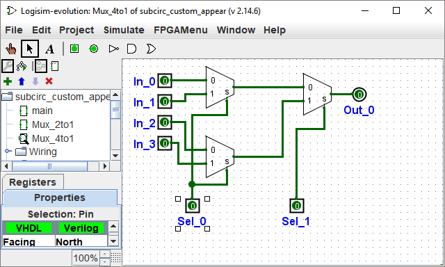

By default, when a subcircuit is placed within a larger circuit, it is drawn as a rectangle with a notch indicating the north end of the subcircuit's layout. Pins will be placed on the rectangle's border based on their facing: Pins that face east in the layout (and typically appear on the west side of the layout) will be placed on the rectangle's west side, according to their top-down ordering in the layout. Pins that face south in the layout (typically toward the north side of the layout) will be placed on the rectangle's north side, according to the left-to-right ordering in the layout.
The default rectangle can optionally include some letters that will appear
in the middle of the rectangle. To specify this, select the selection tool
( ) and click the background of the circuit's
layout. This will show the circuit attributes in the attribute table, including
the Label, Label Facing, and Label Font attributes.
The value of the Label attribute will be drawn in the rectangle's center;
the Label Facing attribute customizes which direction the text is drawn,
and of course the Label Font attribute customizes the font used.
) and click the background of the circuit's
layout. This will show the circuit attributes in the attribute table, including
the Label, Label Facing, and Label Font attributes.
The value of the Label attribute will be drawn in the rectangle's center;
the Label Facing attribute customizes which direction the text is drawn,
and of course the Label Font attribute customizes the font used.
The default appearance is very usable, and indeed Logisim existed for many
years with no other option. If, however, you prefer that the subcircuit be
drawn differently, you can select Edit Circuit Appearance
from the
Project menu, and Logisim's interface will switch from its regular
layout-editing interface to an interface for drawing the circuit's
appearance. Below, we are editing the 2:1 multiplexer's appearance so that
it is drawn with the usual trapezoid rather than a rectangle.
(You can see the project toolbar just below the regular toolbar.
This can be enabled through the Project menu, and it allows quick switching
between editing the layout and appearance.)

With the appearance for the 2:1 multiplexer drawn as above, the layout for the 4:1 multiplexer would then appear as the following.

The appearance editor is like a traditional drawing program, but there are a few special symbols for indicating how the drawing works when placed into a circuit's layout. These special symbols cannot be removed.
The green circle with a line coming out of it, which we'll call the anchor.
There is exactly one anchor in each subcircuit appearance.
Each component in a circuit has a single point identifying its location;
a user sees this when creating a new component:
The mouse click identifies just a single location, and the component is placed
relative to that (usually with the primary output at the mouse's location)
The anchor identifies the mouse's location relative to the overall drawing
when the subcircuit is created.
The anchor also identifies the appearance's facing, as indicated by the direction the anchor's line points from its circle. When placing the subcircuit into a layout, the user can change the subcircuit's facing; the anchor's facing indicates in which direction the appearance is oriented. In our example, the anchor is facing east, and each instance of the subcircuit in the 4:1 multiplexer is also facing east, so they are all drawn in the same orientation as the 2:1 multiplexer's appearance.
The blue circles and squares with dots in them are the subcircuit's
ports.
There are exactly as many ports as there are input and output
pins in the circuit.
Ports corresponding to inputs are drawn as squares, while ports corresponding
to outputs are drawn as circles.
Each port indicates how a wire connecting into the
circuit will correspond to an input or output pin within the layout.
When you select a port, Logisim will indicate the corresponding pin by popping up a miniature diagram of the layout in the window's bottom right corner, with the corresponding pin(s) drawn in blue. This does not happen when all ports are selected.
The toolbar contains tools for adding additional shapes, as listed below with descriptions of how the shift and alt key modifies the tool behavior. In addition, clicking or dragging the mouse with the control key pressed regularly snaps the mouse position to the nearest grid point.
| Select, move, copy, and paste shapes. | |
| Add or edit text. | |
| Create a line segment. Shift-drag keeps the line's angle at a multiple of 45°. | |
| Create a quadratic Bezier curve. For the first drag, where you specify the curve's endpoints, shift-drag keeps the endpoints at an angle that is a multiple of 45°. Then you click to indicate the control point's location; shift-click ensures the curve is symmetric, while alt-click draws the curve through the control point. | |
| Create a sequence of connected lines, whose vertices are indicated by a succession of clicks. Shift-clicking ensures that the angle between the previous vertex and the current one is a multiple of 45°. Double-click or press the Enter key to complete the shape. | |
| Create a rectangle through dragging from one corner to the opposite corner. Shift-drag to create a square, and alt-drag to create the rectangle starting from the center. | |
| Create a rectangle with rounded corners through dragging from one corner to the opposite corner. Shift-drag to create a square, and alt-drag to create the rectangle starting from the center. | |
| Create an oval through dragging from one corner of its bounding box to the opposite corner. Shift-drag to create a circle, and alt-drag to create the oval starting from the center. | |
| Create an arbitrary polygon, whose vertices are indicated by a succession of clicks. Shift-clicking ensures that the vertex is at a 45° angle from the previous one. Double-click, press the Enter key, or click the starting vertex to complete the shape. |
Next: Debugging subcircuits.